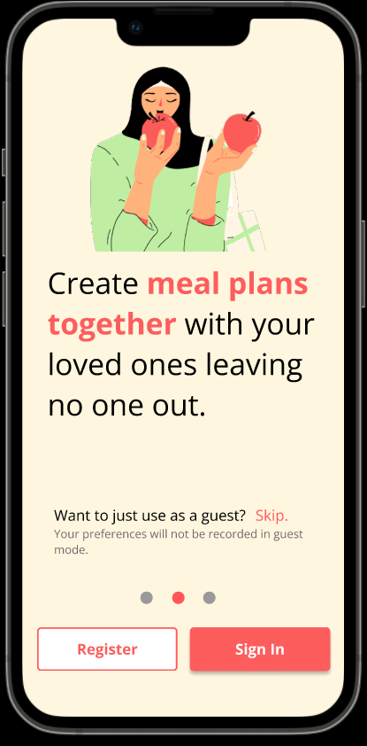

The mobile app mockup describes a platform that aims to streamline and optimize the decision making process of where and what to eat. By taking into consideration user input, which includes, but not limited to – dietary restrictions, location, budget and preferred cuisine, the application proposes food locations that fulfill their needs. The platform would also allow groups of people to make a collective decision where everyone’s preferences in the group can be considered before suggestions are even made. Thereafter, if the location chosen requires reservations to be made, users would be able to follow through with reservations, which makes the process more efficient.
Prototyped using Figma
See the final mockup here 